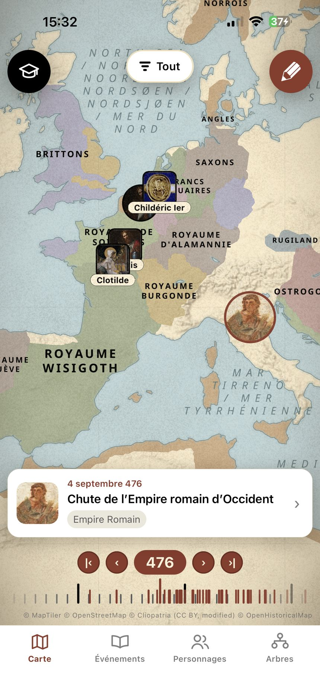
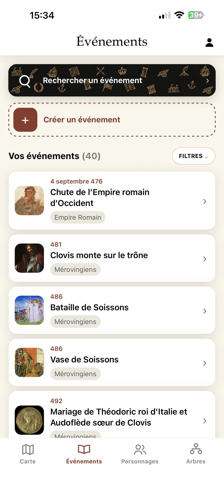
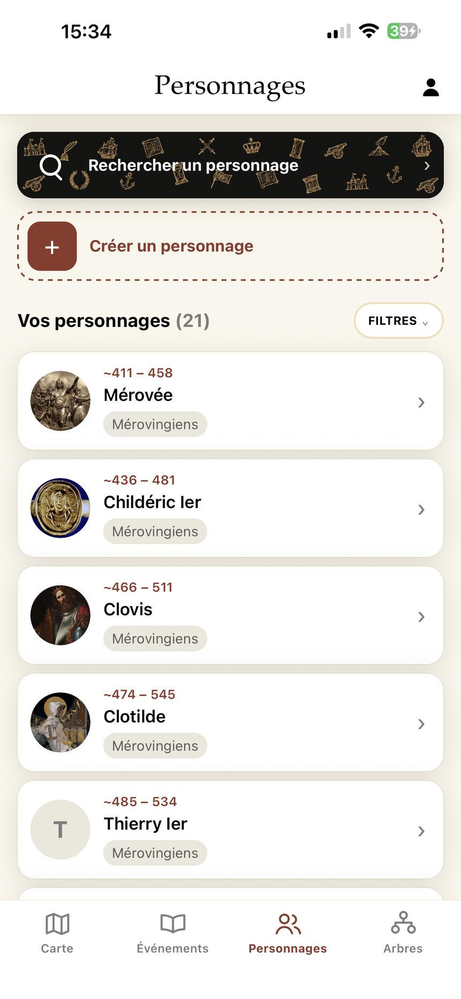
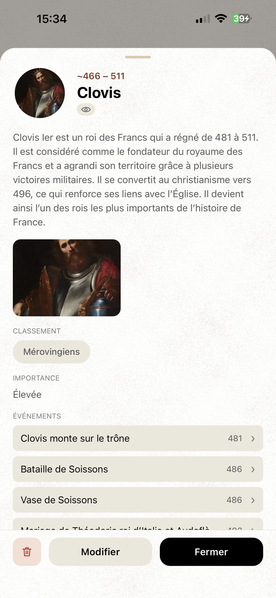
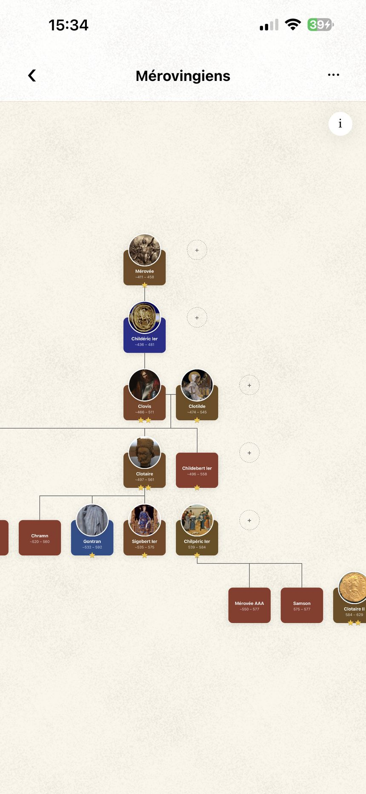
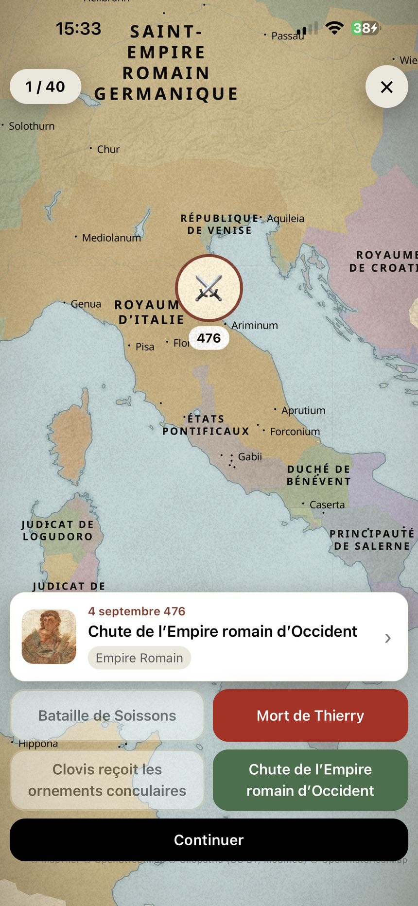
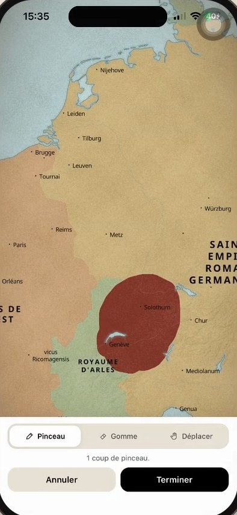

Explorez l'histoire
à travers le temps.
Faites défiler la frise chronologique, année après année : les frontières se redessinent, les villes apparaissent, les événements s'allument à leur date.

Une carte.
Des siècles d'histoire.
Territoires, événements et personnages réunis au même endroit. Chaque personnage se tient sur la carte entre sa naissance et sa mort : faites glisser le temps, et la carte se peuple puis se dépeuple.
Cinq mille ans de frontières, des royaumes francs au Saint-Empire — et tous les noms à la graphie de leur époque.
Organisez les événements historiques.
Dates, images et classements : chaque élément à sa place. Un événement se date à l'année, au mois ou au jour — et quand la date est incertaine, elle le dit.

Et ceux qui les ont faits.
Un portrait, une naissance, une mort, et le classeur auquel le personnage appartient. Les vôtres, ou ceux que la communauté a déjà écrits.

Tout se tient.
Chaque personnage est relié à ses propres événements : de sa fiche, on passe à la bataille, et de la bataille, au lieu où elle s'est déroulée.

Visualisez les liens entre les générations.
Des généalogies construites à la main : couples, filiations, et des étoiles pour dire qui compte le plus dans la lignée.
Les Mérovingiens, de Mérovée à Clotaire II.

Apprenez. Testez vos connaissances. Progressez.
Les questions se posent sur la carte elle-même. Vous choisissez ce que vous révisez :
- Événements, personnages ou territoires
- Un classeur, ou tous
- Un niveau d'importance
- Pour les territoires : les parties du monde et la période
- L'ordre chronologique ou aléatoire

La réponse, tout de suite.
Le lieu bat sur la carte, quatre réponses s'offrent à vous. Une erreur se voit en rouge, la bonne réponse en vert — et à la fin, le relevé de la séance.
La carte aussi est l'œuvre de la communauté.
Peignez un territoire au doigt, ou posez une ville, valables entre les années que vous leur fixez. Vos ajouts peuvent enrichir la carte commune.
